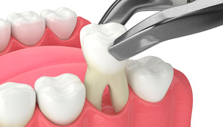

Extracciones Dentales: Solución Efectiva para Problemas Dentales Graves
Las extracciones dentales son un procedimiento dental que implica la eliminación de un diente de la boca. Aunque la extracción dental es siempre el último recurso y se intenta evitar siempre que sea posible, a veces es necesaria para resolver problemas dentales graves y proteger la salud bucal a largo plazo.
En nuestra clínica, entendemos que la decisión de someterse a una extracción dental puede ser difícil y estresante. Por eso, nuestro equipo de profesionales altamente capacitados está aquí para brindarte el apoyo y la atención compasiva que necesitas durante todo el proceso.
Antes de realizar una extracción dental, realizaremos una evaluación completa de tu salud bucal y discutiremos tus opciones de tratamiento. Si se determina que la extracción dental es la mejor opción para ti, te guiaremos a través del proceso y te explicaremos qué esperar antes, durante y después del procedimiento.
Durante la extracción dental, nos esforzaremos por garantizar tu comodidad y bienestar en todo momento. Utilizaremos técnicas avanzadas y anestesia local para minimizar cualquier molestia o dolor. Después del procedimiento, te proporcionaremos instrucciones detalladas sobre cómo cuidar el área y promover una recuperación rápida y sin complicaciones.
Si experimentas dolor intenso, hinchazón, infección o daño dental irreversible, una extracción dental puede ser la solución necesaria para restaurar tu salud bucal y prevenir futuros problemas. ¡Contáctanos hoy mismo para programar una consulta y descubrir cómo podemos ayudarte a cuidar de tu sonrisa!
